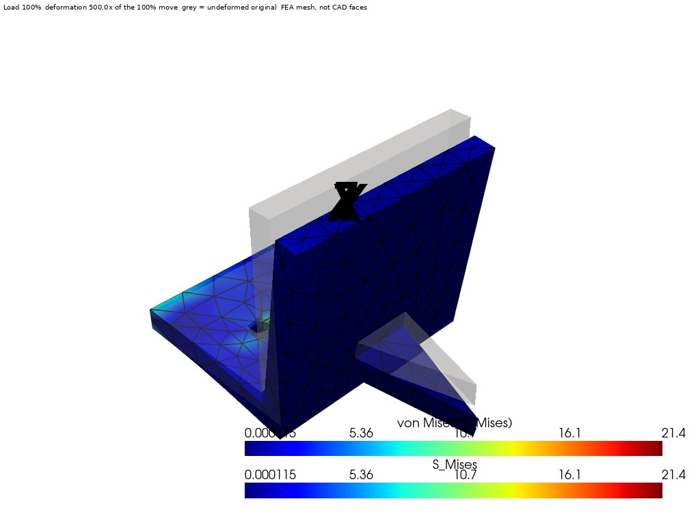

A part goes from CAD to a rendered stress plot without anyone opening a GUI. The mesh, the solve and the render are all scripted, and the solver's own log decides whether the answer stands.

A gusseted angle bracket under load. Colors are von Mises stress. The gray shape is the undeformed part and the colored mesh is the deformed part, exaggerated so the motion is visible. The mesh edges are drawn on purpose, so a reviewer can judge whether the mesh is fine enough where the stress is high.
The image is rendered off-screen by a script straight from the solver's result file. Nothing in it is drawn by hand.
Geometry comes from Onshape, a STEP file or an STL. Gmsh builds a tetrahedral mesh. CalculiX solves it, and PyVista renders the result. The engineer picks the material, the fixed faces, the loaded faces and the load direction, either by axis band or by clicking real CAD faces.
The same orchestration drives Code_Aster, Elmer and FreeFEM for structural work and OpenFOAM and Code_Saturne for flow. Each was run on a known reference case first: a published Code_Aster benchmark, a FreeFEM cantilever compared with beam theory, and the standard OpenFOAM pitzDaily tutorial.